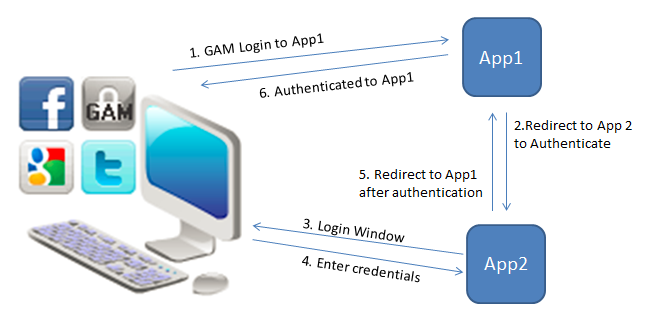
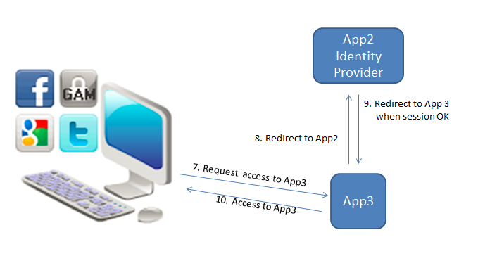
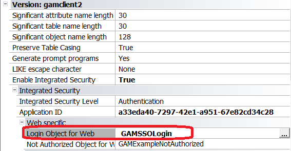
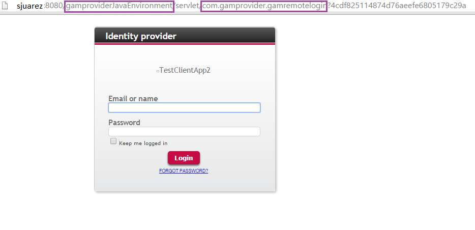
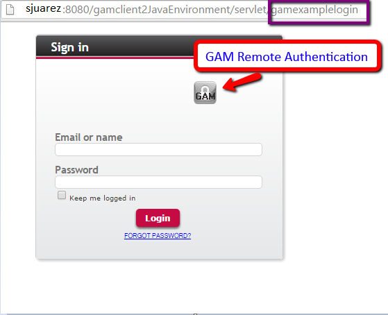

This functionality solves the problem of providing centralized authentication for different, distributed web applications - SSO.
In the case of two or more GeneXus web applications that run in the same browser, the user will only need to authenticate once when the first application that requires authentication prompts to log in.
While the session is valid, the user will not need to enter his credentials again, even after switching to another web application. The login will be valid for all web applications running in the same browser instance (in different tabs).
Summary
In this scenario, all the web applications involved need to use GeneXus Access Manager, and one of them should be configured as the Identity Provider (the server that owns the user identities and credentials. It's who the user authenticates with.).
GAM, which is the Identity Provider, will be used to authenticate the other applications (the same that happens with Facebook, Twitter, and Google, all of which are identity providers).
Consider a scenario with three web applications: App1, App2, and App3. Let App2 be the Identity Provider application.
The following diagram shows the flow as the user tries to execute a private object of any of the other applications.

In the diagram, the user tries to execute a private object of App1, and this redirects to the Identity Provider application - App2 (Step 1 and 2 of the diagram).
Then, the user is shown the login screen and after entering his credentials, there is an automatic redirect to App1.
After logging in to App1, if the user tries to execute a private object of App3 from the same web browser, it redirects to the Identity Provider App2. If the session is valid (there is already a valid session for that user), then the login is not shown to the end user, and he has access to App3. See the following diagram:

Note that this is very similar to what happens with Facebook and Twitter. When the user logs into any of those sites, the applications that use them as identity providers use the same valid session if they run in the same browser.
The configuration of SSO consists of configuring the GAM on the server as well as the GAM on the clients so that the clients can authenticate to the server.
On the server, you need to define a GAM application that must have the same credentials as the GAM application on the client. On the client, you need to define the GAM Remote Authentication type, which we explain below.
1. Configure the GAM Identity Provider
2. Configure the Client Applications
For steps 1 and 2 see GAM Remote Authentication Type
3. Configure the GAM Login object in the client applications
In each client application, the Login Object for Web property can be set to GAMSSOLogin object. This object checks if the user has a valid session. If not, it triggers the remote login mechanism. It is distributed with the GAM Examples.

Login object for web property
One possibility is to have one GAM database for each of the client applications, and one for the Identity Provider. Another, is to have only one GAM database and a different Repository for each.
Using GeneXus 15 Upgrade 11 or higher, you have another way to model this solution, that is to have only one GAM database and only one GAM repository for all of them. See SAC 43517 for more information on this topic. In this case, you have to use GAM impersonation.
One possibility is to configure Login Object for Web property = GAMSSOLogin.
In that case, when the user tries to execute a private object, the GAMSSOLogin object is automatically executed. GAMSSOLogin checks if the user has a valid local session, if not, it executes a Remote Authentication.
Note that the GAMSSOLogin object has the following code, which is valid only if you have only one GAM Remote Authentication Type defined in the Repository.
GAMRepository.LoginGAMRemote()
In case that you have more than one GAM Remote Authentication Type defined, you have to change the code:
&GAMLoginAdditionalParameters.AuthenticationTypeName = "gam-remote-2"
&LoginOK = GAMRepository.Login(&UserName, &UserPassword, &GAMLoginAdditionalParameters, &GAMErrors )
Remote Authentication consists of connecting to the Identity Provider to obtain a valid session for the user if it exists, or showing a login window for the user to enter his credentials.
The login shown to the user, in this case, is the object specified under Local Login URL - in the server configuration (1). In general, the GAMRemoteLogin is used for that purpose.

When the user has a valid session provided by the Identity Provider application, it redirects straight to the client application.
Another possibility is to configure Login Object for Web property = GAMExampleLogin.
In this case, the GAMExampleLogin object is executed automatically when a private object is accessed. The user can authenticate using the local GAM; or the Remote Authentication using the icon designed for that.

- When the user authenticates to the Identity Provider for the first time, he is registered in the GAM database of the client application using the same GAMUser GUID identifier that is used in the GAM database of the Identity provider.
- The password is not stored in the client GAM database, and the password policies that apply are the policies of the GAM database of the server application.
For X Evolution 3 and previous versions, the GAMRepository.Logout() method performs a logout local to the client. In the server, the session continues to be valid until the logout is executed there.
Since GeneXus 15 the Logout has three different behaviors to configure, see Logout options for Single Sign On using GAM
- The mechanism used in this solution is based on Oauth 2.0.
- Since GeneXus 15 upgrade 2 GAM implements SSO in SD applications also.
(1) GAM Remote Authentication Type
(2) Managing Roles in applications using SSO
(3) GAM SSO flow of execution
(4) HowTo: Implement SSO for applications that do not use GAM
|